LINEAS DE NEGOCIO
Contamos con equipos de la mas avanzada tecnología necesarios en la producción y análisis de viales, tabletas, ampollas, cremas, jaleas, jarabes, suspensiones entre otros.
ZERIGAN
Está indicado en bovinos (terneros destetos, novillos de levante y ceba y en hembras de desecho), ovinos y caprinos como promotor de crecimiento, para el mejoramiento de la conversión alimenticia, como también en el tratamiento y control de parásitos.
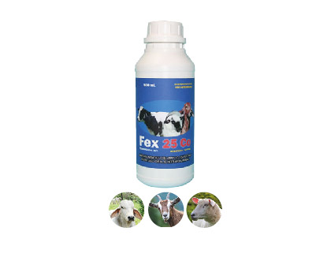
FEX 25 Co
Es un antiparasitario de amplio espectro que pertenece a la familia de los Benzimidazoles y se diferencia de otras sustancias del mismo grupo químico por presentar para su actividad antihelmíntica mayor eficacia, amplio espectro de acción, baja dosis terapéutica y excelente tolerancia.
ROMICAN-T
Es un nematicida-tenicida oral en suspensión para caninos y felinos, a base de Pamoato de pirantel y Praziquantel. El Praziquantel es el anticestódico más usado en el momento.
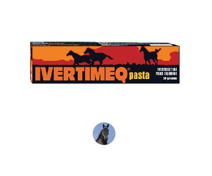
IVERTIMEQ
Antiparasitario de amplio espectro para equinos, a base de Ivermectina al 0.6% en forma de pasta, envasado en una jeringa con anillo dosificador que permite administrar la dosis exacta para cada animal.
IVERTIGAN
Es un endoectoparasiticida a base de Ivermectina al 1%, con un vehículo especial que le confiere al producto una acción prolongada garantizando facilidad de aplicación, mayor eficiencia y gran economía..
DILARVON R-15
Es una solución estéril al 15% de Levamisol clorhidrato, que actúa contra las formas adultas y larvarias de los parásitos sin interferir en el metabolismo normal de los mamíferos.
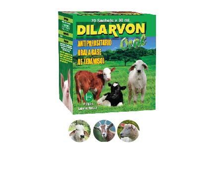
DILARVON ORAL
Está indicado en el control de los siguientes parásitos gastrointestinales y pulmonares de bovinos, ovinos y caprinos: Haemonchus, Chabertia, Bunostomum, Trichostrongylus, Ostertagia, Nematodirus, Oesophagostomum, Strongyloides, Cooperia y el parásito del pulmón (Dictyocaulus). En porcinos Strongyloides, Oesophagostomum Hyostrongylus, Ascaris y el parásito del pulmón (Metastrongylus).
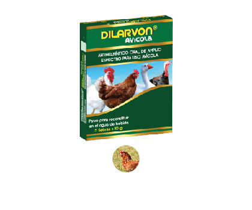
DILARVON Avícola
Es un antihelmíntico de amplio espectro a base de Levamisol clorhidrato de alta eficacia contra las formas maduras e inmaduras de los parásitos gastrointestinales, traqueales y pulmonares de las aves.
FASCIGAN
Es un endoparasiticida de amplio espectro a base de Albendazol, con agradable sabor a melaza para que los animales lo consuman con mayor gustosidad. La jeringa posee una práctica tabla dosificadora en la que se indica el peso del animal y el volumen que se debe aplicar.
EQUITAL
Es un antihelmíntico de amplio espectro en suspensión para equinos, a base de Pamoato de pirantel.
ROMICAN
Es un antiparasitario en suspensión para caninos, a base de Pamoato de pirantel.
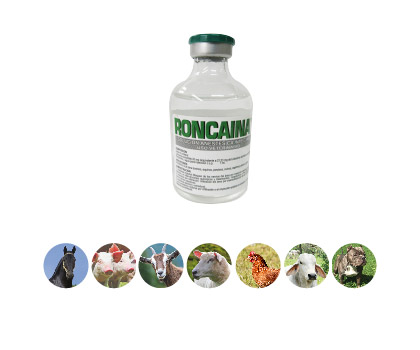
RONCAINA
Es un potente anestésico local que actúa en forma directa sobre los nervios sensitivos y motores, produciendo una pérdida localizada, reversible y temporal de la sensibilidad y capacidad motora.
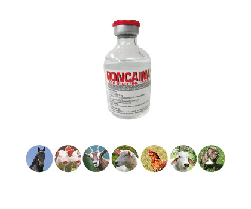
RONCAINA con Epinefrina
La adición de Epinefrina, por su conocida acción vasoconstrictora, disminuye la rata de absorción de la Lidocaína, prolongando la duración de la anestesia, reduciendo la absorción sistémica y potencializando su acción.
La Epinefrina también disminuye notablemente el sangrado durante la intervención; esto es importante en las áreas altamente vascularizadas.
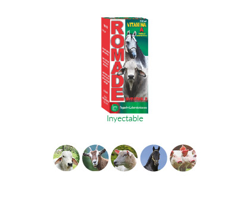
ROMADE Inyectable
Es una solución de vitaminas A y E en un vehículo hidromiscible, a la que se le han adicionado estabilizantes y preservativos que garantizan la calidad del preparado y la estabilidad de las vitaminas.
La absorción parenteral de las formas hidromiscibles es más rápida que las oleosas y causan menos irritación al aplicarse por vía intramuscular.
ROMADE Oral
Combina la acción de las vitaminas A y E, que por su vehículo son rápidamente absorbidas para que el organismo disponga inmediatamente de ellas. Las vitaminas que no son utilizadas inmediatamente, se almacenan en el hígado y éste las facilita según la demanda del organismo.
ROMAPHOS B12
Tiene una fórmula especialmente diseñada para el tratamiento de los trastornos orgánicos agudos o crónicos ocasionados por deficiencia de Fósforo y Vitamina B12 en bovinos, ovinos, caprinos, porcinos y caninos.
ROEVITAN
Es una asociación de vitaminas del complejo B en forma inyectable, específicamente indicado en el tratamiento de las deficiencias de Tiamina (Vitamina B1), Riboflavina (Vitamina B2), Niacinamida (Nicotinamida) y Cianocobalamina (Vitamina B12).
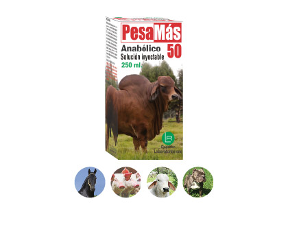
PESAMAS-50
Es un anabólico esteroide inyectable de rápido efecto y acción prolongada, a base de Boldenona undecilenato.
RECALFOS
Es una solución estéril a base de calcio, fósforo, magnesio y dextrosa en altas concentraciones, perfectamente balanceadas para obtener rápidamente altos niveles de estos minerales en el organismo.
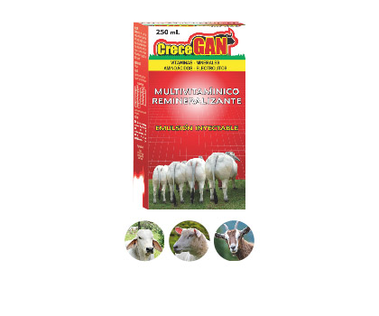
CRECEGAN
Los mejores elementos a disposición a su disposición Vitaminas, Minerales, Aminoácidos, Electrolitos y Dextrosa.
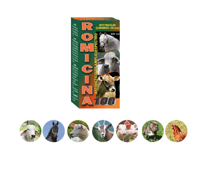
ROMICINA-100
Es un antibiótico de amplio espectro, activo contra bacterias gram-positivas y gram-negativas; además actúa contra agentes patógenos no afectados por otros antibióticos como es el caso de las rickettsias, hematozoarios, mycoplasmas, espiroquetas y actinomicetos.
ROMICINA-200 L.A.
Es un antibiótico de amplio espectro y larga acción, activo contra bacterias gram positivas y gram negativas; además actúa contra agentes patógenos no afectados por otros antibióticos como es el caso de las rickettsias, algunos hematozoarios, mycoplasmas, espiroquetas y actinomicetos.
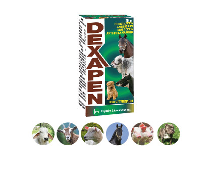
DEXAPEN
Es una combinación de 3 antibióticos (Penicilina G procaínica, Penicilina G potásica, Estreptomicina sulfato) y un potente antiinflamatorio (Dexametasona).
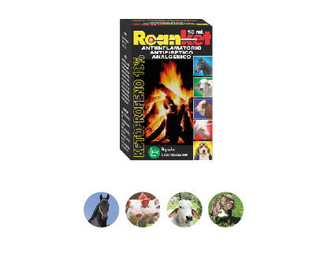
ROANKET
Solucion inyectable, es un antiinflamatorio, antipiretico y analgésico sin tiempo de retiro en leche
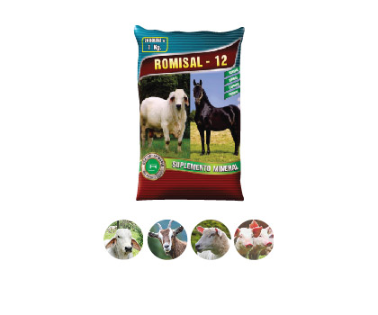
ROMISAL-12
Es un suplemento mineral con 8 minerales indispensables para el normal mantenimiento, producción y reproducción de los animales, en cantidades científicamente balanceadas y con alta calidad y biodisponibilidad. Además contiene saborizantes para aumentar la gustosidad, lo que permite que los animales consuman los minerales en las cantidades adecuadas.
ROMISAL con Vitaminas
Suplemento que contiene 8 minerales, 3 vitaminas y saborizantes que aumentan la gustosidad. Las vitaminas son compuestos orgánicos específicos necesarios en la ración en cantidades suficientes para mantener la salud y la capacidad productiva y reproductiva del animal.
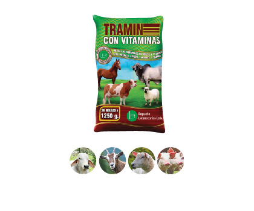
TRAMIN con Vitaminas
Es una mezcla de minerales trazas y vitaminas. Los minerales trazas o microelementos y las vitaminas son de enorme importancia en la nutrición animal y deben suministrarse en cantidades suficientes para los requerimientos diarios.
BIODIN
Es una fuente de Yodo orgánico altamente asimilable en forma de polvo que permite ser mezclado con la sal, concentrado o el agua de bebida, y así realizar un tratamiento eficaz a todos los animales del hato con una mayor comodidad.
ROXAGAN N.F.
Es un antiséptico, repelente y cicatrizante tópico a base de violeta de genciana, ácido tánico, fenol, aceite de pino y alcohol etílico.
UBRESAN
Es una pomada de color blanco amarillento, untuosa al tacto y de olor característico, que reúne las propiedades antiinflamatorias, analgésicas, rubefacientes y antineurálgicas de sus principios activos.